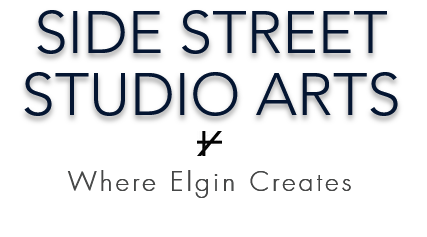

W/E
Side Street Studio Arts seeks artwork to represent the Asian American community during Asian American and Pacific Islander Month. W/E is a reference to the western/eastern cultural split for which many Asian Americans in the United States hold space. This is an open call for visual art in any medium to discuss, share, and make space for this experience.
Exhibition runs May 1 – May 31